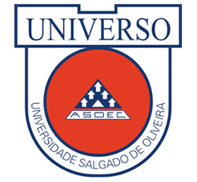

Universo-bh
Teto do Curso de Sistema da Informação da UNIVERSO disciplina de Programação Orientada a Objeto III
Com o intuito de estimular e contribuir para a preparação de mão-de-obra especializada e indispensável à política de desenvolvimento nacional, o bacharel em Sistemas da Informação tem sua formação focada, principalmente, para o projeto e desenvolvimento de produtos de software (que se transformarão em ferramentas auxiliares, e de apoio, ao desenvolvimento de sistemas de informação) e na criação/manutenção do ambiente tecnológico da organização (banco de dados, sistemas operacionais, redes de computadores, etc.).
O campo da Sistemas da Informação não se restringe aos computadores. Inclui também o desenvolvimento de trabalhos práticos no setor. Por isso, cabe ao bacharel em Sistemas da Informação dedicar-se aos aspectos científicos, trabalhando no desenvolvimento e adaptação de sistemas importados, no processamento de dados científicos e técnicos, bem como na criação de novas linguagens de programação e novas arquiteturas de hardware.

UNIVERSO
Correio Eletrônico:
prof.adrianofirmo@gmail.com
Desenvolvido por Sistema da Informação